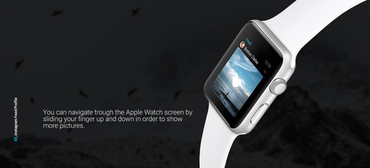
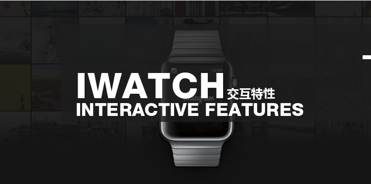
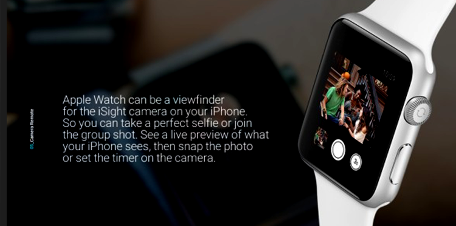

IWATCH交互特性

关于IWATCH的交互特性及使用情景
个人在使用体验中发现，由于页面只能通过左右轻扫的方式
进行切换。实际使用页面较少。
2017年2月27日
IWATCH的主要界面分为：
#iwatch的交互特性及使用情景#
表盘主界面、通知界面、快捷视图、首屏选择界面和app界面

IWATCH的交互方式主要有：
点击、轻扫，对比手机交互方式主要增加了侧面数字表冠旋
转、重压两种交互方式。另外iwatch上并没有手机的长按、双
击、多指等交互操作
侧面表冠旋转交互：
在列表界面可以旋转表冠实现精确滚动；
在圆形选择界面切换选项，例如：收藏联系人界面通过旋转切
换联系人的方式；
缩放选择；例如通过旋转表冠，当前处于中心位置的APP界面；
重压交互：
呼出情境菜单，最多可以放四个功能；
重压进入编辑模式；例如表盘主界面重压可以进入选择界面选
择表盘，也可以自定义表盘显示元素；

IWATCH页面导航方式：
IWATCH有两种导航方式：页面导航和层级导航。页面导航主要适用于各个页面没有直接关联的扁平化的结构；而层级式导航则适用于架构或层级较为复杂的情况。
iwatch有两种导航方式：页面导航和层级导航。页面导航主要适用于各个页面没有直接关联的扁平化的结构而层级式导航则适用于架构。
可以读取用户地理位置信息，基于用户当前的地理位置并结合当前的时间和场景推测推送通知。